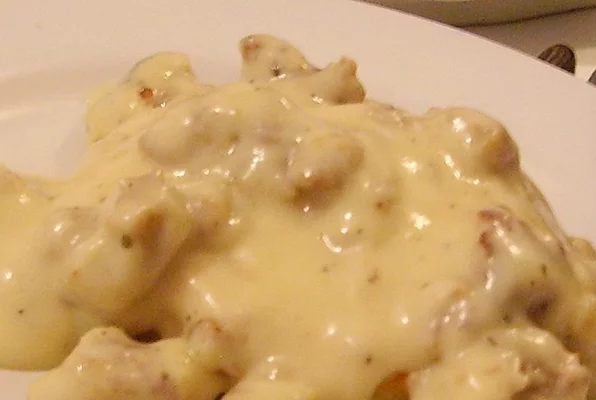

Sausage Gravy

INGREDIENTS
Silky smooth delicious gravy!
- 1 pound breakfast sausage, hot or mild
- 1/3 cup all-purpose flour
- 3 to 4 cups whole milk, more to taste
- 1/2 teaspoon seasoned salt
- 2 teaspoons freshly ground black pepper, more to taste
Direction
- Cook sausage in large skillet over medium heat 5-6 minutes or until thoroughly heated, stirring frequently. Stir in flour. Gradually add milk; cook until mixture comes to a boil and thickens, stirring constantly. Reduce heat to medium-low; simmer 2 minutes, stirring constantly. Season to taste with salt and pepper.